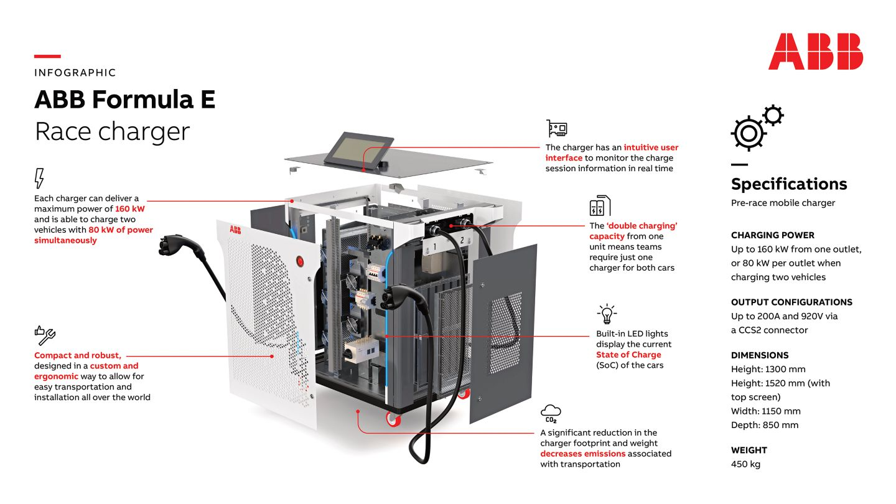

ABB is the official charging partner of Formula E for Season 9 (2022-2023). As an ABB E-mobility engineer working on the R&D of ABB chargers, I was asked to join for the Formula E races in Cape Town, South Africa, in February, as well as in Rome, Italy, in July.
Besides keeping the charger working smoothly so that the race teams could fill their batteries before hitting the track, one highlight was chatting with FIA Girls On Track about women in STEM, as I'd love to see more girls getting into engineering!
Here’s a visualization of the charger that each race team has in their garage. Keeping them in working order is a fascinating mix of diagnosing hardware issues and sleuthing out problems within the Linux operating environment.
